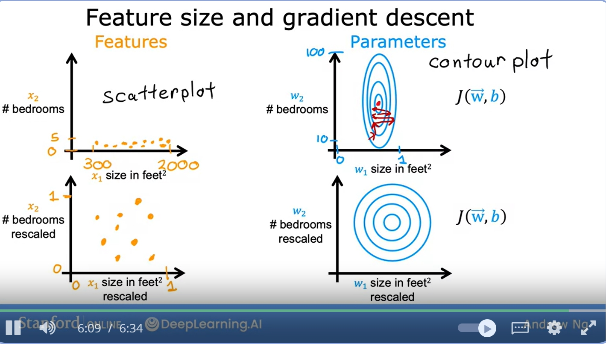
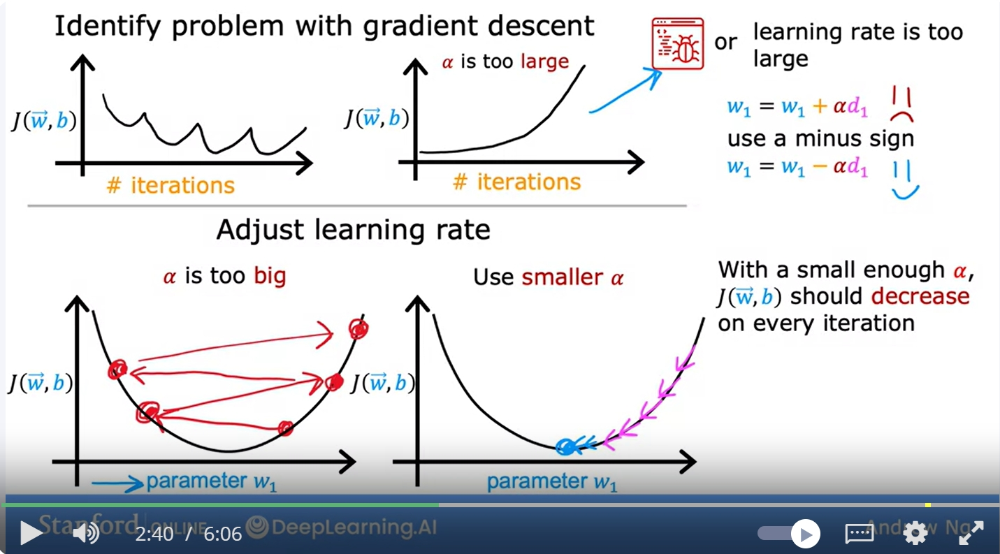

Multi-linear regression
in the previous examples, we are only trying to fit the output y to a single-feature input x
but now we have n features, for example, a house data may include number of bedrooms, age of home in years, price, etc.
notations
we use the following notations
\(\begin{aligned} x &= j^{th} \text{feature}\\ n &= \text{number of features}\\ x^{(i)}(\text{or, sometimes, to note this is a vector}, \vec{x^{(i)}}) &= \text{features of the i}^{th}\text{training example}\\ x_j^{(i)} &=\text{value of feature j in i}^{th} \text{training example}\\ \end{aligned}\)
model
previously: \(f_{w,b} = wx + b\)
now: \(f_(w, b) = w_1x_1 + w_2x_2 +\dots + w_nx_n + b\)
w is now a row vector \(\vec{w} = [w_1, w_2,\dots, w_n]\) this is the parameters of the model
and b is a number
\(\vec{x} = [x_1, x_2, \dots, x_n]\)
so using matric multiplication, we can rewrite this into
\(f_{\vec{w}, b} = \vec{w}\bullet\vec{x} + b\)
(note: the multiple linear regression is not multivariate regression)
Vectorization
only note that in linear algebra we count from 1 not 0
so we have something like
so without vectorization
we do something like
but we can do
gradient descent in multi-linear regression
\(\begin{array}{ll|l} \text{ }& \text{Previous notation} & \text{Vector notation}\\ \text{Parameters} & \begin{array}{l}w_1,\dots, w_n\\ b\end{array} & \begin{array}{l}\vec{w} = [w_1, \dots, w_n]\\ b\end{array}\\ \hline \text{Model} & f_{\vec{w}, b}(\vec{x}) = w_1x_2 + \dots + w_n x_n + b & f_{\vec{w}, b} = \vec{w}\bullet\vec{x} + b\\ \hline \text{Cost function} & J(w_1,\dots, w_n, b) & J(\vec{w}, b)\\ \hline \text{Gradient descent} & \begin{array}{l} \text{repeat until convergence }\{\\ \quad w_j := w_j-\alpha\frac{\partial}{\partial w_j}J (w_1,\dots,w_n,b)\\ \quad b := b-\alpha\frac{\partial}{\partial b}J(w_1,\dots,w_n,b)\\ \} \end{array} & \begin{array}{l} \text{repeat until convergence }\{\\ \quad w_j := w_j-\alpha\frac{\partial}{\partial w}J(\vec{w},b)\\ \quad b := b-\alpha\frac{\partial}{\partial b}J(\vec{w},b)\\ \} \end{array} \end{array}\)
comparison
\(\begin{array}{ll|l} & \text{One feature} & \text{n features}(n\ge 2)\\ \text{repeat}\{\\ & w = w - \underbrace{\alpha \frac{1}{m}(f_{w,b}(x^{(i)})-y^{(i)})x^{(i)}}_{\frac{\partial}{\partial w}J(w,b)} & w_1 = w_1 - \underbrace{\alpha \frac{1}{m}(f_{\vec{w},b}(x^{(i)})-y^{(i)})x_1^{(i)}}_{\frac{\partial}{\partial w_j}J(\vec{w},b)}\\ & & w_2 = w_2 - \underbrace{\alpha \frac{1}{m}(f_{\vec{w},b}(x^{(i)})-y^{(i)})x_2^{(i)}}_{\frac{\partial}{\partial w_j}J(\vec{w},b)}\\ & & \dots\\ & {b = b - \alpha\frac{1}{m}\sum_{i=1}^m(f_{w,b}(x^{(i)})-y^{(i)})} & {b = b - \alpha\frac{1}{m}\sum_{i=1}^m(f_{\vec{w},b}(x^{(i)})-y^{(i)})}\\ & \text{simultaneously update}w,b & \text{simultaneously update}w,b\\ \} & &\\ \end{array}\)
An alternative to gradient descent, only for linear regression
Normal equation - Only for linear regression - Solve for \(w,b\) without iteration
Disadvantages: - no generalisation - slow when feature number is large
gradient descent in practice
feature scaling
so asusme we have the following model \(\hat{\text{price}} = w_1\underset{\text{size of house}}{x_1} + w_2 \underset{\text{number of bedrooms}}{x_2} + b\)
where \(x_1\) is in square feet from 300-2000
\(x_2\) is the number of bedrooms ranging forom 0-5
say we have a training example, \(x_1 = 2000, x_2 = 5, \text{price} = \$500k\)
so we have
\(\begin{array}{l|l} \text{example1} & \text{example2}\\ \underset{\text{large}}{w_1 = 50}, \underset{\text{small}}{w_2 = 0.1}, b = 50 & \underset{\text{small}}{w_1 = 0.1}, \underset{\text{large}}{w_2 = 50}, b = 50\\ \hat{\text{price}} = 50*2000 + 0.1*5 + 50 = 100050.0k & \hat{\text{price}} = 0.1*2000 + 50 * 5 + 50 = 500k\\ \end{array}\)
obviously the example2 is more reasonable
in the scatterplot, we may see all the point concentrating on the edge because one feature is of much larger scale then the other

feature scaling with respect to maximum
if \(x_1\) ranges from 300-200, or \(300\le x_1\le 2000\)
then we could do \(0.15\le \text{scaled } x_1\le 1\)
this maps all the points above zero and below 1
mean normalisation
if \(x_1\) ranges from 300-2000, or \(300\le x_1\le 2000\)
then we do \(x_1 :=\frac{x_1-\mu_1}{2000-300}\) where \(\mu\) is the average of the feature
this maps all the features to equally spread with 0 as the center
z-score
if \(200\le x_1\le 2000\)
then \(x_1:=\frac{x_1-\mu_1}{\sigma_1}\) where \(\sigma_1\) is the standard deviation of the feature, this maps a normal distribution around 0
goal:
we aim for \(-1\le x_j\le 1,\forall x_j\)
so probably
- \(0\le x_1\le 3\) acceptable
- \(-2\le x_1\le 0.5\) acceptable
- \(-100\le x_1\le 100\) not acceptable too large
- \(-0.001\le x_1\le 0.001\) not acceptable, too small
- \(98.5\le x_1\le 100\) not acceptable, too large
feature scaling usually does no harm and can speed up linear regreesion speed
Cheking gradient descent for convergence
recall the gradient descent
\(\begin{cases} w_j = w_j-\alpha\frac{\partial}{\partial w_j}J(\vec{w}, b)\\ b = b - \alpha\frac{\partial}{\partial b}J(\vec{w}, b) \end{cases}\)
we want to pick a good learning rate
so usually we could plot \(J(\vec{w}, b)\) against the number of iterations
we check whether the loss is decreading
the curve is usually called to learning curve
we can also conduct automatic convergence test, pick a small \(\epsilon\), stop if \(J(\vec{w},b)\) is decreasing for less than \(\epsilon\) in a single step
choosing the learning rate

so usualy we first set \(\alpha\) to a very small value, if even this causes \(J(w,b)\) not decreasing, it is likely that there a bug elsewhere
a learning rate too small make more iterations
usually we do something like 0.001, 0.01
so we try to find a overly small lr and a overly large lr, then we pick something in the middle
feature engineering
for example in a house data we have the frontage and the depth of the are that the house is built on
we can use these two features and multiply them together to form a new feature area
ploynomial regression
maybe a linear model cannot fit the data well, we want something like \(f_{\vec{w},b} = w_1 x + w_2x^2 + b\), or \(f_{\vec{w},b} + w_2x^2 + w_3x^3 + b\)
in this case, since \(x^3\) grows expoentially, feature scaling would be crucial in this case
we could also use something like \(f_{vec{w},b} = w_1 + w_2\sqrt{x} + b\) or other stuff